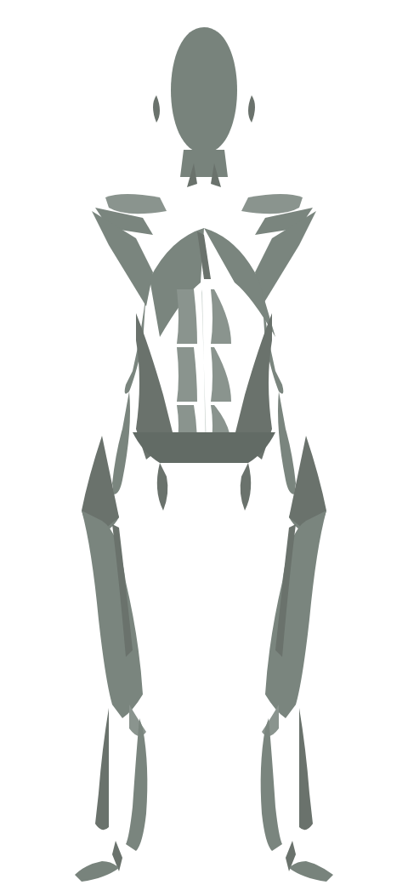

Treino principal
02 / 06
Flexão de braço
4 séries · 10 repetições · descanso 60 s
Séries feitas
2 / 4
Alvo por série
10 reps
Descanso
60 s

Peitoral principal · Tríceps e deltoide anteriores como secundários.